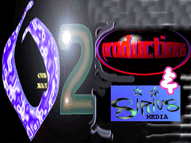

|  |
| |

illustration © 1996 Stephen Saunders
The news about Hemp is everywhere now here in 1999, with industrial hemp well underweigh in many countries and even six states in the US with medical marijuana provisions in the law, put there by popular vote. As this edition goes to press, we have changed the intention of the product’s mission. The goal of providing a press kit of media materials for those in the media industry and at the grassroots level of the hemp movement to use for creating hemp infomedia, has been replaced with a new goal. This new format intends to provide something about the Emperor and the hemp information, for everyone’s media taste. Soundbytes from Jack, music, and videos are included in addition to updates and revisons reflecting Jack’s freshly updated 11th edition of his book. This 11th edition of The Emperor is certainly qualified for bestseller status and will likely go there this edition. We at 0=2 are proud and grateful to have been a part of making the 11th edition book revisions, it made our job of producing this version of the Electric Emperor a bit easier, we’d like to thank Jack for including us!
As we are providing many pictures from previous editions of the Emperor as well as pictures from the current, you will see a bit of an evolutional chronicle of the way the emperor book has changed during its growth from a manila white manuscript into a full blooming message to the world. The project would like to acknowledge give deep thanks, for the support of Evan Schinder, Doug West, Chris Saunders and Ray Martin—without sponsorship from these true believers, the CD-Rom would not be here. The grips of a fearful and narrow-sighted past has almost slipped from us, keep on believing, keep the music playing, keep up the truth about hemp!
Stephen Saunders March 1999
Here it is one year since the release of version 1.1 and hemp is very much in the spotlight. With version 1.2, the Electric Emperor goes multi-platform…
Here is the story about “The Big Lie” presented in many forms and formats. For the PC you will find a session written in HTML and accessable through your favorite web browser, also text, picture files and sound files, plus animations in the Quicktime® format, including the almost eradicated 1940s War Department training film “HEMP FOR VICTORY”.
The momentum has shifted and now with our showing up and following through will do this planet and our species a great service by bringing the laws completely around to reflect the truth about the herb Cannabis Sativa, all over the world.
It is now time for celebrities, professionals, and the law enforcement agencies thenselves to stand up for their rights and the rights of all of us.
We have an opportunity to speak about our unwillingness to support hypocrisy and “LIE ENFORCEMENT”.
We have an opportunity and a right to be healthy and prosper, and allowed to take our roles in the story which is unfolding called planet Earth. Value truly comes from the future.
Information and cooperation is what feeds us, not competition and scarcity. Hemp is green and living proof of this. There are many, many, eyes watching what is unfolding here on the planet and many who applaud our decision to stand up for the truth and inherit the divine planet which is our imminent future.
Stephen H. Saunders, Producer
1997
This project began as a vision of grand scale and tireless commitment to “industry” procedures and specifications, among a small group of individuals with a little bit of equipment, a love for computers, a little bit of free time, a lot of love for hemp, as the main relational ties.
This project represents the marriage of two powerful elements currently acting in the steps through the upliftment of the quality of life here on this planet, and I am grateful to have been a part of the project’s amazing story. It saw financial disaster, numerous setbacks, delays, unconscious sabotage, everywhere inertia could set in, it did.
With a small and inadequate set of tools, while continuing the numerous other things required by life everyday to get by, this group got a modest and forthright product into your hands with a simple request — Spread this information everywhere! Make these words available to everyone as if the well-being of your children’s children depended on it, because it probably does.
After all of the people who live their lives and decisions in fear and scarcity and hatred get to their self-fulfilling prophecy and just deserts, and their poisoning and raping of the land dies with them, those of us left behind to make the best of our lives of healing the world will thank you, wherever you might be—
There is a world that keeps right on going forever into eternity or you wouldn’t be having this experience right now trust me on that!!!!!
Sisters and Brothers, Hemp is at the very heart of this world....
If there has ever been a time to be heard, the time is now.
If this repression would never have taken place, or if it ended too soon, we may have seen as much damage as letting the repression go on too long. The global info-consciousness and the production and distribution infrastructure which was created during this time of repression will keep us connected as a globe, and allow us to spread out and maintain an agrarian-based economy without falling prey to destructive family based tribalism and fiefdom.... An experiment with the basic systems sustaining organic life on this planet for thousands and thousands of years is dealing a disastrous outcome in a meager eighty years of abuse. Clearly the time is upon us for evaluating whether the organic life experience on this planet is worth continuing. Our experience here will continue no matter how pleasant or unpleasant that experience is. Jack and all of us involved in raising consciousness about this marvelous plant and world resource which my friend Joseph Newberry reverently calls “The Queen of the Garden”, are firmly committed to the return of marijuana unequivocally back to her rightful place in the world’s pharmacoepia and economy. The garden we live in is turning to ice and snow unless we can find the way back to the garden we all know deeply in our hearts. It would seem that the best way to get back might be to honor the Queen of the garden.
That most certainly means something different for each one of us.
You, who have the ability to use your computer to get this information out, hold a pivotal position in the effort to get this information to the rest!!! You hold in your hands not a flashy computer game or presentation designed to fill a few of your leisure time hours, but a media press kit which empowers you to create flyers, articles, reports, advertisements, all accessible through your graphics and word-processing software... With this disc you can make the difference!!!!!
1996 looks like the year the laws will finally begin to come around to reflect the truth again on the Hemp issue, de-regulation appearing again imminent on the agendas of politicians all over the globe. Showing up loud and clear in this process makes the positive difference!! Thanks to all for showing up and for not giving up until the way is found. This planet will be a desert no longer......
Stephen Saunders 1995

the authorized on-line version of Jack Herer’s “The Emperor Wears No Clothes”
| previous page | intro | next page |
To skip over the following introductory material:
Click on the buttons to choose a chapter.
| Introduction | Chapter 1 | Chapter 2 | Chapter 3 | Chapter 4 | Chapter 5 | Chapter 6 |
| Overview of the History of Cannabis Hemp | Brief Summary of the Uses of Hemp | New Billion Dollar Crop | The Last Days of Legal Cannabis | Marijuana Prohibition | Medical Literature on Cannabis Medicine | |
| Chapter 7 | Chapter 8 | Chapter 9 | Chapter 10 | Chapter 11 | Chapter 12 | Chapter 13 |
| Therapeutic Use of Cannabis | Hempseed as the Basic World Food | Economics: Energy, Environment, & Commerce | Myth, Magic, & Medicine | The (Hemp) War of 1812, Napoleon & Russia | Cannabis Drug Use in 19th Century America | Prejudice: Marijuana and Jim Crow Laws |
| Chapter 14 | Chapter 15 | Chapter 16 | Appendix | Initiatives | Bibliography | Bonus Section |
| More than Sixty Years of Suppression | The Official Story: Debunking “Gutter Science” | The Emperor’s New Clothes | Original Sources | Recommended Reading |
| previous page | intro | next page |
|
 |
 |
 |
 |